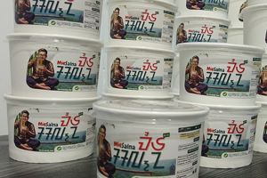

BarPas
Barpas Diciptakan Bukan Semata-Mata Untuk Membuat Dan Menjual Makanan. Barpas Lahir Dari Kebutuhan Untuk Membangun Sesuatu Secara Mandiri Melalui Pengalaman Nyata.
Keterbatasan Modal, Fasilitas, Pengalaman, Dan Keadaan Bukan Dipandang Sebagai Alasan Untuk Berhenti, Tetapi Sebagai Bagian Dari Proses Untuk Mengetahui Apa Yang Benar-Benar Dapat Dibangun. Karena Itu Barpas Menjadikan Kenyataan Sebagai Bagian Dari Proses Belajar. Kegagalan Tidak Dianggap Sebagai Akhir.
Keberhasilan Tidak Dianggap Sebagai Tujuan Yang Membuat Proses Berhenti. Keduanya Menjadi Bahan Untuk Melanjutkan Perjalanan.
Dari Sinilah Muncul Prinsip:
3K
Keberhasilan→ Menunjukkan Apa Yang Dapat Dikembangkan.
Kenyataan → Menentukan Apa Yang Benar-Benar Terjadi.
Ketiganya Menjadi Bagian Dari Pengalaman Yang Membentuk Barpas.
A. VISI BARPAS
“Membangun Ruang Yang Terus Tumbuh Melalui Pengalaman Dan Kenyataan, Tempat Setiap Individu Dan Karya Dapat Berkembang Dengan Identitasnya Sendiri, Namun Tetap Memiliki Tempat Dalam Satu Panggung Bersama.” “Masing-Masing Boleh Menjadi Dirinya Sendiri. Tapi Semuanya Tetap Punya Tempat Di Panggung Yang Sama.”
B. MISI BARPAS
1. Membangun Secara Mandiri Mengembangkan Usaha Dan Karya Berdasarkan Kemampuan, Sumber Daya, Serta Keadaan Nyata Yang Tersedia.
2. Menjadikan Pengalaman Sebagai Pembelajaran Menggunakan Pengalaman Langsung, Keberhasilan, Kegagalan, Dan Kenyataan Sebagai Bahan Untuk Terus Belajar.
3. Mengembangkan Produk Yang Memiliki Identitas Tidak Hanya Menghasilkan Produk Yang Dapat Dijual, Tetapi Membangun Produk Yang Memiliki Karakter, Cerita, Dan Identitasnya Sendiri.
4. Memberikan Ruang Bagi Keberagaman Membiarkan Setiap Produk, Individu, Dan Gagasan Memiliki Karakter Masing-Masing Tanpa Kehilangan Hubungan Dengan Barpas Sebagai Satu Kesatuan.
5. Menguji Dan Memperbaiki Tidak Menganggap Suatu Hasil Sebagai Sesuatu Yang Mutlak Sempurna, Tetapi Terus Melakukan Pengujian, Evaluasi, Dan Koreksi.
6. Mengembangkan Barpas Secara Bertahap Membangun Usaha Berdasarkan Kemampuan Nyata Dan Pertumbuhan Yang Dapat Dipertanggungjawabkan, Bukan Sekadar Mengejar Pertumbuhan Cepat.
7. Menciptakan Sesuatu Yang Dapat Diwariskan Sebagai Pengalaman Menjadikan Perjalanan Barpas Bukan Hanya Sebagai Aktivitas Ekonomi, Tetapi Sebagai Dokumentasi Bahwa Sesuatu Yang Kecil Pun Dapat Dibangun Melalui Proses.
C.IEB
Independent Experiential Builder Ieb Merupakan Salah Satu Konsep Identitas Yang Lahir Dari Perjalanan Membangun Barpas. IEB Menggambarkan Seseorang Yang: Mandiri → Mengalami → Menguji → Belajar → Membangun → Mengoreksi → Lanjut. IEB Tidak Menempatkan Kesempurnaan Sebagai Titik Awal. Justru Pengalaman Menjadi Alat Untuk Menemukan Apa Yang Harus Dilakukan Berikutnya.
IDENTITAS VISUAL BARPAS
Identitas Barpas Menggunakan Pola Utama:
Hitam Merepresentasikan Ruang Perjuangan, Ketidakpastian, Dan Keadaan Awal.
Hijau Merepresentasikan Pertumbuhan Dan Kehidupan.
Putih Merepresentasikan Ruang, Kesederhanaan, Dan Kejelasan.
Orange Digunakan Sebagai Aksen Pelengkap.
Pola Visual Utama:
Hitam — Hijau — Putih Dengan Orange Sebagai Aksen.

Simbol Ulat Di Ranting Kecil
Logo Barpas Menggambarkan Ulat Hijau Yang Sedang Memanjat Ranting Kecil. Tidak Terdapat Daun Pada Ranting Tersebut. Hal Tersebut Bukan Kekurangan Desain, Tetapi Bagian Dari Makna.Barpas Menggambarkan Sesuatu Yang Belum Sampai Pada Bentuk Akhirnya. Ulat Belum Menjadi Kupu-Kupu. Ranting Belum Menjadi Tempat Yang Nyaman. Namun Proses Pertumbuhan Tetap Berlangsung. Karena Itu Simbol Tersebut Dapat Dibaca Sebagai: “Belum Menjadi Bukan Berarti Tidak Sedang Bertumbuh.” Dan Pada Masa Depan, Transformasi Ulat Menjadi Kupu-Kupu Dapat Menjadi Simbol Perkembangan Barpas.
FILOSOFI
Salah Satu Pemikiran Yang Berkembang Dari Perjalanan Tersebut Adalah:
Pemikiran Ini Menekankan Bahwa Sesuatu Yang Tampak Kosong, Tidak Ada, Atau Tidak Memiliki Nilai Dari Satu Sudut Pandang Belum Tentu Menggambarkan Keseluruhan Kenyataan. Dalam Konteks Barpas:
Sesuatu Yang Terlihat Kecil Bukan Berarti Tidak Memiliki Potensi.
Sesuatu Yang Belum Berhasil Bukan Berarti Tidak Memiliki Proses.
Sesuatu Yang Belum Terlihat Bukan Berarti Tidak Sedang Dibangun.
Namun Barpas Juga Tidak Mengatakan Bahwa Segala Sesuatu Yang Tampak Kosong Pasti Memiliki Hasil. Yang Ditekankan Adalah:
Jangan Menjadikan Satu Pandangan Sebagai Keseluruhan Kenyataan.
PRODUK
BarPas
BarPas

Makanan instan merupakan salah satu jenis makanan yang banyak diminati masyarakat karena praktis dalam penyajian dan dapat dikonsumsi oleh berbagai kalangan.
Melihat peluang tersebut, kami mengembangkan MieSalna, olahan yang dirancang dengan ketidak sengajaan di salah satu tongkrongan berkelompok yang disebut BarPas lalu menghasilkan konsep yang berbeda dari produk mie instan pada umumnya. Produk BarPas tidak hanya mengutamakan aspek rasa, tetapi juga membawa identitas lokal melalui konsep visual, kemasan, serta karakter produk. Pengembangan produk dilakukan secara bertahap dengan memperhatikan kualitas bahan, proses produksi, kemasan, keamanan pangan, serta kebutuhan konsumen yang saat ini dilakukan. MieSalna pada dasarnya sudah sempat berjalan namun tidak bertahan begitu lama hanya sekitar kurang lebih satu bulan, itupun bukan dikarenakan tidak ada pembelinya namun dikarenakan kekurangan modal serta alat-alat yang di butuhkan untuk kelancaran proses produksi. BarPas memproduksi secara manual oleh salah satu satu anak muda tongkrongan yang berasal dari BarPas.
1. MieSalna
• Nama Miesalna
• Aksara Sunda
• Konsep Rasa Original
• Identitas Lokal
• Cerita Produk
• Desain Kemasan
• Konsep Penyajian
• Karakter Visual
• Hubungan Dengan Barpas
Miesalna Bukan Hanya Produk Pertama Dalam Ekosistem, Tetapi Menjadi Main Character Dalam Cerita Awal Barpas.
2. Arise
3. BanKai

Simbol seseorang yang mulai dari keterbatasan, tetap tumbuh, belajar dari pengalaman, dan terus membangun tanpa harus sudah menjadi “sempurna”.